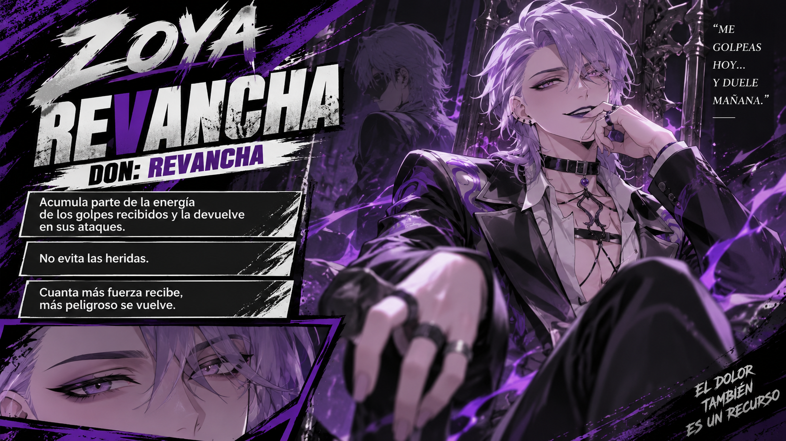

SEDE MAKAI / ARCHIVO DE LA ORGANIZACIÓN
Liga de
Villanos.
Cada nombre, una historia.
Cada don, una amenaza.
DRAGON BALL · REGISTRO DEL ROL

AL MANDO / 01ZoyaRevanchaConsultar expediente ↗0Expedientes
0Con vida
0Fallecidos
0Estado sin confirmar
01 / REGISTRO CENTRAL
Los rostros de la Liga
No hay expedientes con estos filtros
Prueba otro nombre o vuelve a mostrar el archivo completo.
02 / ORGANIZACIÓN
Liga de Villanos
Makai es nuestra sede. Aquí se conservan los dones, las historias y los expedientes de quienes forman la Liga, incluso de quienes ya no están.
SEDEMakaiJEFA DE LOS VILLANOSZoya
03 / MANTENIMIENTO DEL ARCHIVO
Tus fichas. Tu archivo.
1. Edita un miembro y guarda sus cambios en este navegador. 2. Descarga los datos para el repo. 3. Sustituye makai-datos.js en tu repositorio y publica. La descarga incluye fichas, estadísticas, naturalezas y estado de combate. También puedes importar una copia JSON.